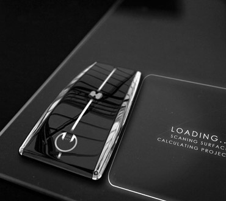
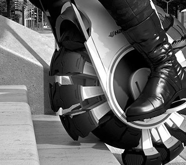
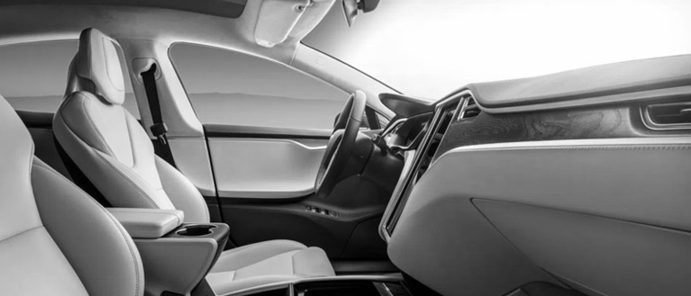
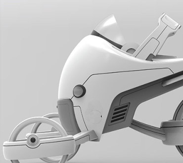
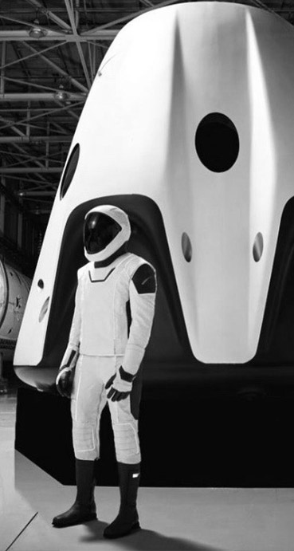
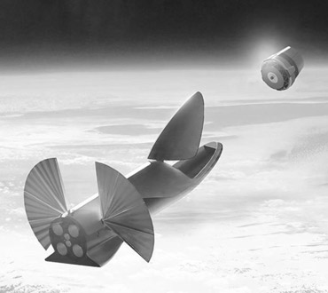

Les fermes flottantes, les mots de passe des ondes cérébrales et les voitures à café ne sont que quelques-unes des incroyables inventions et innovations qui façonneront notre avenir.
Depuis sa formation en 2002, SpaceX a fait de grands progrès avec sa flotte de fusées Falcon, établissant initialement la capacité d’atteindre l’orbite avec Falcon 1, poussant les capacités de la fusée Falcon 9 depuis l’orbite terrestre basse initiale.
Dans le cadre du concours Global Learning X Prize, des équipes du monde entier tentent de développer des solutions open source qui aideront les quelque 250 millions d’enfants dans le monde qui sont incapables de lire, d’écrire ou de remplir les fonctions mathématiques de base.






VOIR TOUS LES PROJETS